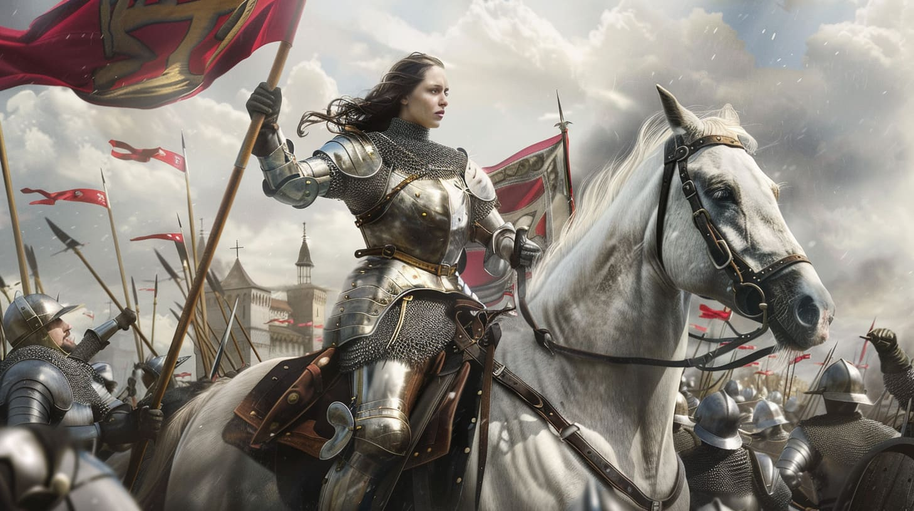

-
nome: Pedro Henrique da Silva Batista
nome: Sophia Gomes Bezerra
nome: João Guilherme Assis
nome: Pedro Antônio
-
A Origem e as Visões Joana d’Arc
Joana d’Arc nasceu por volta de 1412, em Domrémy, uma pequena vila francesa. Desde jovem, afirmava ouvir vozes divinas, que lhe davam a missão de ajudar a França a vencer a guerra contra os ingleses. Apesar de ser apenas uma camponesa, sua fé e determinação a levaram a procurar o delfim Carlos VII para oferecer sua ajuda na guerra.
>
-
Sua Liderança na Guerra dos Cem Anos
Joana convenceu Carlos VII e recebeu autorização para liderar tropas francesas, vestindo armadura e comandando soldados em batalhas importantes. Sua participação foi crucial para a vitória na batalha de Orleães em 1429, um ponto de virada para a França. Seu papel na guerra consolidou sua reputação como guerreira e inspirou seus compatriotas.
>
 >
>
-
Captura, Julgamento e Legado
Após algumas derrotas, Joana foi capturada em 1430 pelos borgonheses e entregue aos ingleses. Em um julgamento controverso, foi acusada de heresia e condenada à morte. Em 1431, foi queimada viva em Rouen. Séculos depois, em 1920, foi canonizada como Santa Joana d’Arc pela Igreja Católica, tornando-se um símbolo de coragem e fé.
>
 >
>